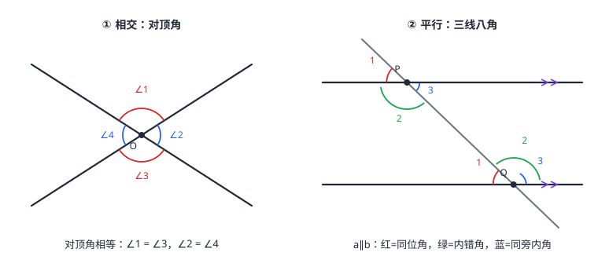

相交线与平行线
两条直线相交出对顶角与邻补角；相交成 90° 就是垂直，垂线段最短。第三条线截两条平行线出「三线八角」：平行时同位角相等、内错角相等、同旁内角互补；反过来它们成立，两直线就平行。判定管「由角定线」，性质管「由线定角」，方向相反不能混用。
| 所属主题 | 图形的初步认识 |
|---|---|
| 所属模块 | 几何 |
| 课标学段 | 第四学段（7~9 年级） |
| 前置知识 | 直线、射线、线段、角与角平分线 |
| 核心素养 | 几何直观推理能力 |
教材定位
人民教育出版社《人教版（2024版）义务教育教科书·数学》
七年级下册第7章 相交线与平行线7.1 相交线7.2 平行线
对应七下 7.1 与 7.2：对顶角、垂直、点到直线的距离在 7.1，平行线的判定与性质、三线八角在 7.2。
说明
两条直线相交，得到四个角。有公共顶点、两边互为反向延长线的两个角叫对顶角；有一条公共边、和为 180° 的两个角叫邻补角。四对邻补角、两对对顶角。当相交成 90° 时叫互相垂直，交点是垂足；从直线外一点到这条直线的所有连线中，垂线段最短——垂线段的长度就是这点到直线的距离。
同一平面内不相交的两条直线叫平行线。平行公理：经过直线外一点，有且只有一条直线与这条直线平行——由此还能推出「平行于同一条直线的两条直线平行」。判定平行的武器是角：同位角相等、或内错角相等、或同旁内角互补，两直线就平行；已知平行反过来取角的数值，用的则是性质。三线八角先找截线：两个角的顶点都在截线上，才谈得上同位角（形如 F）、内错角（形如 Z）、同旁内角（形如 U）。
使用场景
「距离」类验收问题靠垂直：跳远成绩、河宽到岸线的距离、零件边缘到基准线的偏差，都定义为垂线段长——因为垂线段最短，是唯一的「标准量法」，沿斜方向量都会偏大。
平行结构里的角度计算（铁轨、格栅、推拉门窗框）用三线八角：知道一个交角，同位角、内错角照抄，同旁内角用 180° 去减。方向与方位角的换算也常借助「平行线同位角」把角度从一个位置搬到另一个位置。
注意点
判定与性质方向相反：由角的相等（互补）推出平行是判定，由平行推出角的关系是性质。写依据时「同位角相等，两直线平行」和「两直线平行，同位角相等」不能互相顶替——条件和结论整个换了位。
对顶角的要求是「有公共顶点且两边互为反向延长线」，只说「相等的角」不够。平行公理里的「有且只有」针对「直线外」一点：若点在直线上，过这点与原直线平行的直线（不重合的）一条也没有。
证明

图 1：左是对顶角（∠1=∠3、∠2=∠4）；右是三线八角（a∥b 时红同位角相等、绿内错角相等、蓝同旁内角互补）
证明
结论 1对顶角相等。
对顶角相等不是量出来的：设两直线相交于 O，∠1 与 ∠3 都是 ∠2 的邻补角，于是 ∠1+∠2=180°、∠3+∠2=180°。两个等式两边同减 ∠2，得 ∠1=∠3——这正是「同角的补角相等」的图形版，∠2=∠4 同理。（见图 1 左）
关键一步依据是邻补角的定义与等式性质：∠1、∠3 都与 ∠2 互补，所以两个等式里含同一个量 ∠2，两边同减 ∠2 后剩下的就是 ∠1 与 ∠3。这是「同角的补角相等」的图形版，与量角器无关，所以不是量出来的。
结论 2两条直线相交，只要有一个角是 90°，四个角就都是 90°。
垂直只要一个角是 90°，四个角就都是：∠1=90° 时，它的邻补角 ∠2=180°−90°=90°，对顶角 ∠3=∠1=90°、∠4=∠2=90°。所以定义里不必要求四个角都直，一个就够。
关键一步依据是上一条的对顶角相等加上邻补角互补：∠1=90° 时 ∠2=180°−90°=90°，再由 ∠3=∠1、∠4=∠2 补齐其余两个。两个条件叠加，四个角才全是直角，所以「互相垂直」的定义只需要一个角是直角。
结论 3平行的判定与性质方向相反：判定由角推线，性质由线推角，两者不能混用。
平行的判定与性质是「方向相反」的两套话：判定说「若同位角相等（或内错角相等、同旁内角互补），则两直线平行」；性质说「若两直线平行，则同位角相等（或内错角相等、同旁内角互补）」。判定像验货——用角证明线平行；性质像开箱——已知平行去取角的数值。两者互换了「如果」和「那么」，不能混用。
关键一步依据在于条件与结论的位置对调：判定的条件是角的关系、结论是线的位置关系；性质的条件是线平行、结论是角的关系。用哪一条取决于题目给的是角还是线，写依据时必须把条件和结论摆对位置，否则整条推理方向就反了。
结论 4都垂直于同一条直线的两条直线平行。
都垂直于同一条直线的两条直线平行：设 a⊥c、b⊥c，则 a 与截线 c 的交角、b 与 c 的交角都是 90°，这是一对相等的同位角，由判定得 a∥b。
关键一步依据是判定而不是性质：把「都垂直」翻译成一对相等的同位角（都是 90°），条件凑齐了才敢用「同位角相等，两直线平行」。先认准 c 是截线，才谈得上同位角——三线八角先找截线。
动手实验
用两把三角尺推平行线：一把三角尺的斜边贴住直线，另一把沿它的边上下平移，画出一系列直线——推动过程中截线（三角尺的边）与纸面上直线的同位角始终没变，画出的直线就互相平行。再用推平行线前后分别量同一个同位角，读数相等，正是「同位角相等，两直线平行」的操作版。
解题思路
三线八角识别三步：先找截线（两个角顶点所在的那条公共线）；再摆字母——同位角像 F（两角同在上/下、同在左/右）、内错角像 Z（交错在截线两侧、都夹在两线之间）、同旁内角像 U（同在截线一侧、夹在两线之间）；最后按平行与否选「判定」或「性质」的方向。
平行判定选条件：图上给等角（同位/内错）用对应判定；给「都是 90°」用同位角相等或直接用「垂直于同一直线的两直线平行」；给同旁内角的和用互补判定。算角时把 180°−已知角 的互补计算先做，再按「同位/内错照抄、同旁相加为 180°」取值。
按场景的例题
例 1（场景：测量与工程） 跳远成绩的量法
跳远沙坑的起跳线是一条白线。裁判为什么不沿斜方向量脚印到起跳线的距离，而是量脚印到起跳线垂直的那一段？
解：落点到这条直线的连线有无数条，其中垂线段最短。跳远成绩定义为「落点到起跳线的距离」即垂线段的长度——选它当标准，是因为它唯一且最短：沿任何斜方向量，读数都比真实距离大，成绩就虚高了。
答：因为垂线段最短；成绩定义为垂线段长（点到直线的距离）。
例 2（场景：图形设计） 装饰格栅的交角
装饰格栅的两条横档互相平行，一根斜杆与上横档所成的锐角为 65°。斜杆与下横档所成的锐角是多少度？斜杆与两横档的同旁内角是多少度？
解：斜杆是截线，它与上横档、下横档构成的同位角。两横档平行，同位角相等，所以斜杆与下横档所成的锐角也是 65°。同旁内角与同位角互补：180°−65°=115°。验算：65°+115°=180°。
答：交角 65°；同旁内角 115°。
例 3（场景：物理情境） 镜面反射的夹角
一束光射到水平放置的镜面上，与镜面的夹角为 35°。反射光线与入射光线分居法线两侧，且与法线的夹角相等。求入射光线与反射光线的夹角。
解：入射光线与镜面成 35°，则它与法线（垂直于镜面）成 90°−35°=55°。反射光线与法线的夹角也是 55°，两光线分居法线两侧，夹角=55°+55°=110°。验算：两光线与镜面各成 35°，从平角里减去：180°−35°−35°=110°，一致。
答：入射光线与反射光线的夹角为 110°。
常用推论
对顶角相等、邻补角互补——两条相交线上一共两对对顶角、四对邻补角。
平行公理的推论：平行于同一条直线的两条直线平行；垂直于同一条直线的两条直线平行。
两直线平行时，同位角相等、内错角相等、同旁内角互补——一套三用；判定与性质方向相反。
易错点
错「相等的角是对顶角」。
为什么错对顶角还要求有公共顶点、两边互为反向延长线。角平分线分出的两个角相等，但共顶点共一边，不是对顶角。
正确对顶角一定相等；相等的角不一定是对顶角——反着说只能得到假话。
错「同旁内角相等，两直线平行」。
为什么错同旁内角的关系是互补（和为 180°）。相等只是各 90° 的特殊情形。
正确同旁内角互补，两直线平行。
错「过一点有且只有一条直线与已知直线平行」。
为什么错漏了「直线外」：如果这个点在直线上，过它作不出与原直线不重合的平行线。
正确经过直线外一点，有且只有一条直线与这条直线平行。
直观理解
平行线像铁轨：永不相交靠的不是「看起来不交」，而是同位角永远相等——把平行线想象成「角度被锁死的两条线」。三线八角认角像认字母：F、Z、U 三个字形就是三对角的地标。判定像验货（角是证据，线是被验的货），性质像开箱（平行是已知的箱，角是取出来的货）——验货单和取货单不能互相开。